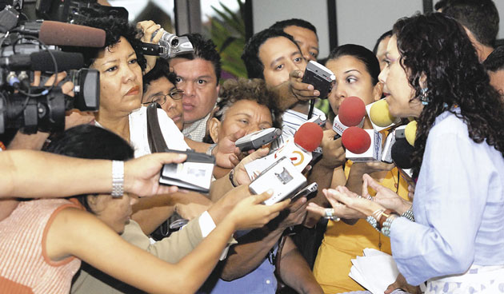
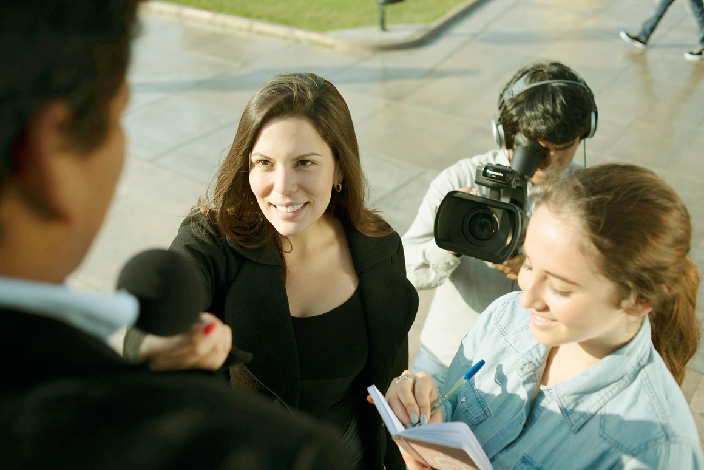
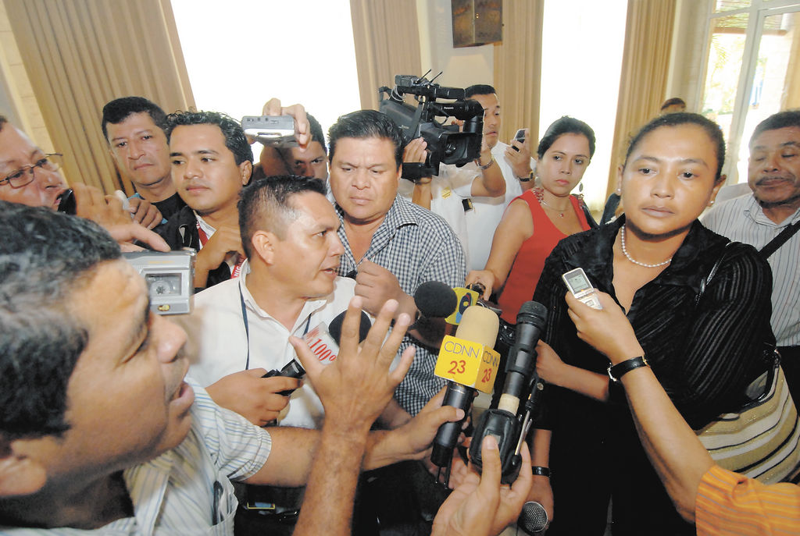

| |
|
periodismo |
|
Perfil Profesional de la Carrera: Perfil del Profesional. El profesional de esta carrera está relacionado con el Qué ocurre y por qué ocurren las cosas en la sociedad. Su labor es comprender la realidad social y comunicarla. Cuenta con la capacitación instrumental y tecnológica adecuada para una difusión en cualquier medio de comunicación. Sabe la forma de escribir correctamente para llegar al público y la forma de expresarse en el lenguaje más adecuado dependiendo de: el tipo de noticia, la gravedad de los acontecimientos, la importancia de los hechos, el público al que se dirige y el medio en el que se va a difundir la noticia. Esta labor comprende dos aspectos: el periodismo de información y el periodismo de opinión. Periodismo de información. Investigar es la única garantía de verdad y transparencia informativa. La forma de lograrlo es a través del *reportaje para ser testigos veraces, honestos y oportunos de los acontecimientos. Debe ser capaz de comunicar con objetividad. Esto significa que el periodista debe buscar la verdad no en una sola parte, sino que en varias, entrevistar a todas las partes involucradas, recopilar todos los hechos y versiones, es decir investigar en forma acuciosa. |
 |
 